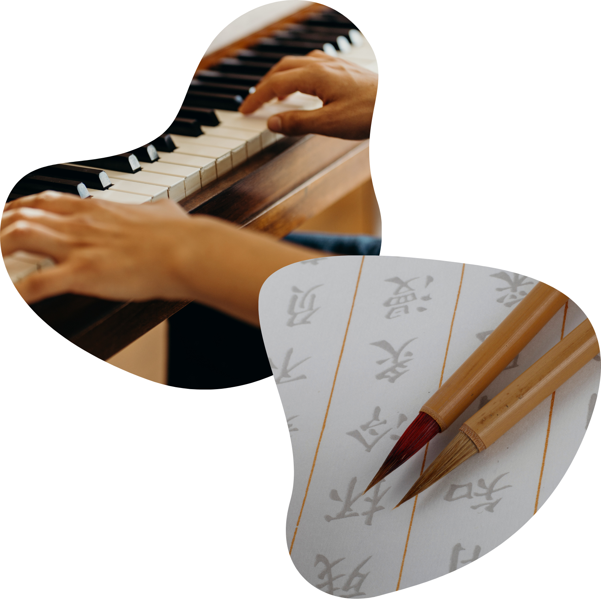

- ML Engineer Intern | Aspiring ML & Software Engineer -
About
I'm a ML Engineer Intern and aspiring ML & Software Engineer, passionate about harnessing the potential of Artificial Intelligence to drive positive, ethical and sustainable change.
With a background in Computer Science, software engineering and Machine Learning (NLP) hands-on experience, I'm eager to craft innovative solutions for real-world challenges.
Love to learn new tech & connect with new people!

Beyond Tech
Beyond the realm of technology, I find pure joy and inspiration in music. Playing the piano and being part of an orchestra are integral parts of my life, bringing a creative and harmonious balance
to my analytical pursuits.
Additionally, I immerse myself in the art of brush calligraphy, where the beauty of written words becomes a medium for expressing myself. They deeply inspire and ignite my creativity, enriching my
technical journey.